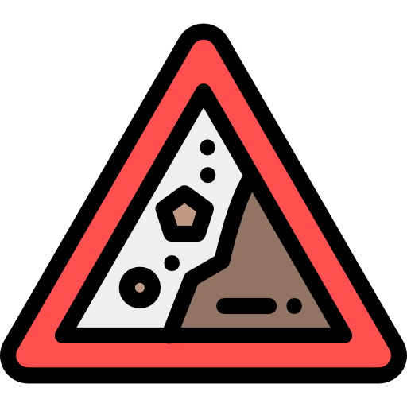
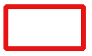

<HTML>
<head>
    <meta charset="utf-8">
    <meta name="viewport" content="initial-scale=1,user-scalable=no,maximum-scale=1,width=device-width">
    <meta name="mobile-web-app-capable" content="yes">
    <meta name="apple-mobile-web-app-capable" content="yes">
    <title>Lokasi Longsor PETI BOLMONG MARET 2019</title>
    
    <script src="https://code.jquery.com/jquery-2.1.4.min.js"></script> 
    <link rel="stylesheet" href="js/betterscale/L.Control.BetterScale.css">
    <link rel="stylesheet" href="https://unpkg.com/leaflet@1.3.1/dist/leaflet.css"> 
    <link rel="shortcut icon" href="assets/longsor.png">

    <style>
        html, body, #map {
          height: 100%;
          width: 100%;
          margin: 0px;
        }
     </style> 
</head>
<Body>
    <script src="https://unpkg.com/leaflet@1.3.1/dist/leaflet.js"></script> 
    <script src="js/betterscale/L.Control.BetterScale.js"></script>
    <div id="map"></div>

    <script>
    var map = L.map('map').setView([0.5620226,124.3101899],14);
    var basemap0 = L.tileLayer('http://{s}.google.com/vt/lyrs=p&x={x}&y={y}&z={z}', {
    maxZoom: 20,
    subdomains:['mt0','mt1','mt2','mt3'],
    attribution: 'Google Terrain | <a href="https://drive.google.com/file/d/1aMERovd4D6B6-dqzM9cpTfOnxjcTP7Ms/view?usp=sharing" target="_blank">Surono</a>'
    });
    var basemap1 = L.tileLayer('http://{s}.google.com/vt/lyrs=y&x={x}&y={y}&z={z}', {
    maxZoom: 20,
    subdomains:['mt0','mt1','mt2','mt3'],
    attribution: 'Google Satellite | <a href="https://drive.google.com/file/d/1aMERovd4D6B6-dqzM9cpTfOnxjcTP7Ms/view?usp=sharing" target="_blank">Surono</a>'
}); 
    basemap1.addTo(map);
    
        var lonGsor = L.geoJson(null, {
        pointToLayer: function (feature, latlng) {
            return L.marker(latlng, {
                icon: L.icon({
                    iconUrl: "assets/longsor.png",
                    iconSize: [18, 18],
                    iconAnchor: [12, 28],
                    popupAnchor: [0, -25]
                })
            });
        }
        });
        $.getJSON("data/longsor.geojson", function (data) {
        lonGsor.addData(data);
        map.addLayer(lonGsor);
        }); 

        var Blok_eksplorasi = L.geoJson(null, {
    style: function (feature) {
      return {
         fillColor: "#f49842",
         fillOpacity: 0.8,
         color: "white",
         weight: 2,
         opacity: 1
        };
        },
        onEachFeature: function (feature, layer) {
        layer.on({
        mouseover: function (e) {
         var layer = e.target;
         layer.setStyle({
            weight: 2,
            color: "#00FFFF",
            opacity: 1,
            fillColor: "yellow",
            fillOpacity: 1
         });
         Blok_eksplorasi.bindPopup(feature.properties.Nama);
         },
      mouseout: function (e) {
         Blok_eksplorasi.resetStyle(e.target);
                map.closePopup();
            }
        });
        }
        });
        $.getJSON("data/eksplorasi.geojson", function (data) {
        Blok_eksplorasi.addData(data);
        map.addLayer(Blok_eksplorasi);
        });

    var JRBM = L.geoJson(null, {
    style: function (feature) {
      return {
         color: "red",
         weight: 2,
         opacity: 1
        };
        }
        });
        $.getJSON("data/blok_operasi.geojson", function (data) {
        JRBM.addData(data);
        map.addLayer(JRBM);
        }); 

        var baseMaps = {
        'Google Terrain': basemap0,
        'Google Sat': basemap1
        };
        var Layers = {
        "Lokasi Longsor<br>&nbsp;&nbsp;&nbsp;": lonGsor,      
        "Blok Eksplorasi<br>&nbsp;&nbsp;&nbsp;": Blok_eksplorasi,
        "Blok Operasi Produksi<br>&nbsp;&nbsp;&nbsp;": JRBM
        };
        var layerControl = L.control.layers(baseMaps, Layers, {collapsed:false});
        layerControl.addTo(map);


        L.Control.Watermark = L.Control.extend({
        onAdd: function(map) {
            var img = L.DomUtil.create('img');
            img.src = 'assets/oblique.png';
            img.style.width = '190px';
            return img;
        },
        onRemove: function(map) {
        }
        });
        L.control.watermark = function(opts) {
        return new L.Control.Watermark(opts);
        }
        L.control.watermark({ position: 'bottomright' }).addTo(map);

        L.control.betterscale({
        metric: true,
        imperial: false
        }).addTo(map); 
</script> 
</Body>
</HTML>